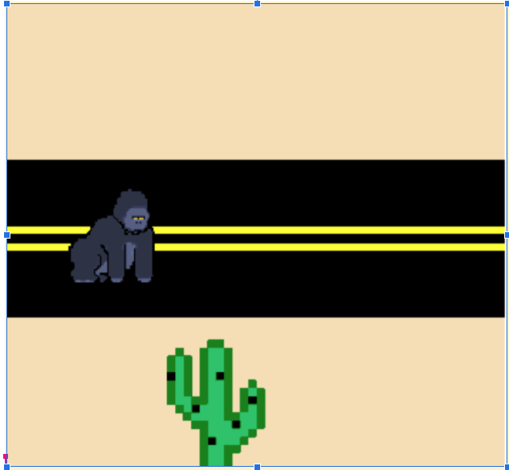
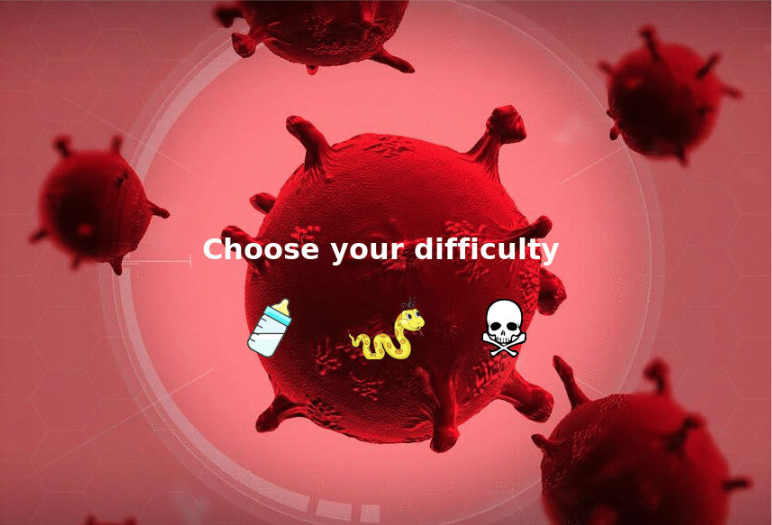
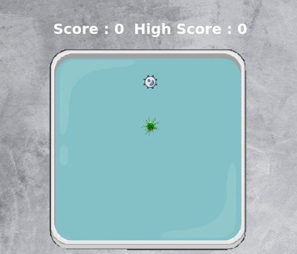
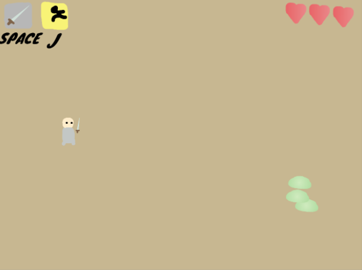
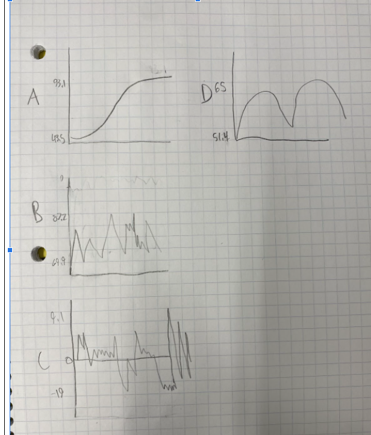
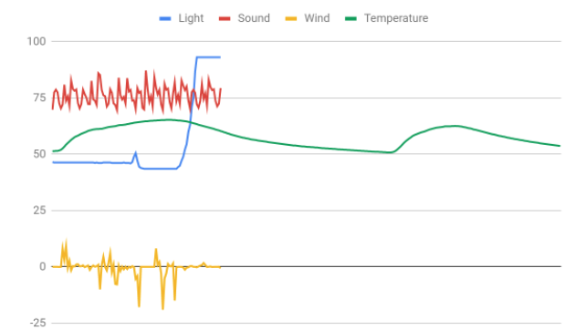

Home
Portfolio
About Me
This is my Portfolio Page!
1.1.9 Gorilla Game

For our 1.1.9 project you use the arrow keys to move the gorilla up and down to avoid the moving cactuses. You have three lives until the game ends.
1.2.5 Virus Game


For our 1.2.5 project we made the Virus Game. The goal is to eat as many white or red blood cells without hitting a barrier or yourself. Every cell that you eat will at 10 points to the score and make the virus longer.
Scratch Project

For our scratch project we made a dungeon crawler. The goal of the game is to defeat the enemies to move on to different levels. Once you beat the slimes and then the skeletons you face a boss. Defeating the boss gives you a victory screen. Lose 3 lives and you recieve a game over screen.
3.1.6 Rover Project


The data suggests that the environment the robot landed in was one of a Rocky Mountain. Due to the way in which the blue graph shoots up, but is interrupted briefly, there is no explanation for this irregularity except for a thunderstorm for sound. or cloud coverage for light. Due to the way in which the interruption does not halt the increase, it is unlikely that it is a thunderstorm, and more probable that it is instead a cloud which briefly covered the robot's sensor. Every other data set matches up too. Wind is yellow, as it is the only data set that can be reasonably negative. Temperature is cyclical, and increases and decreases throughout the day. Sound checks out too, in that it has stutters, and snaps above ambient sounds for the wind.
3.2.4 Honey Project


For the 3.2.4 project my group analyzed data. We made visuals of the data by creating it into graphs. We made graphs for year, honey production, and state. We sorted these by honey production and made many different graphs.